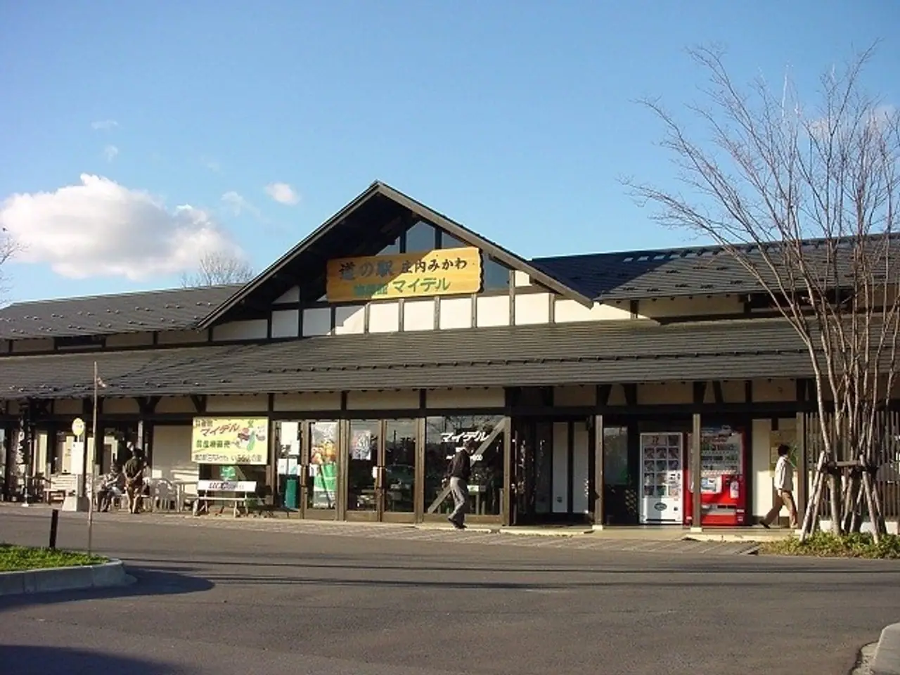
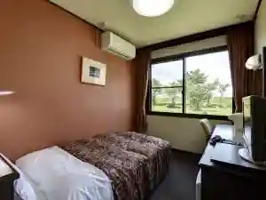
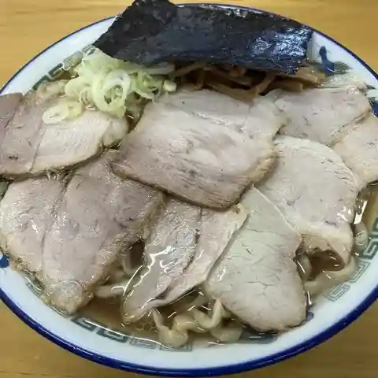
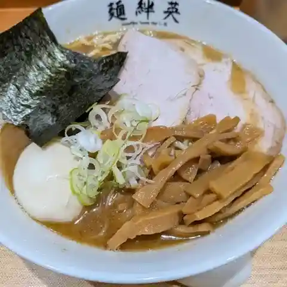
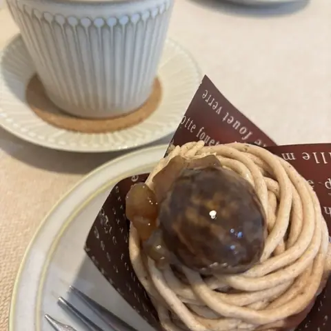
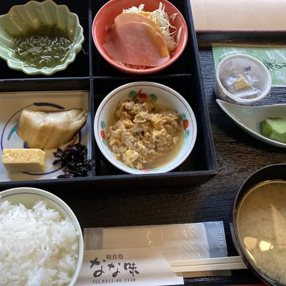
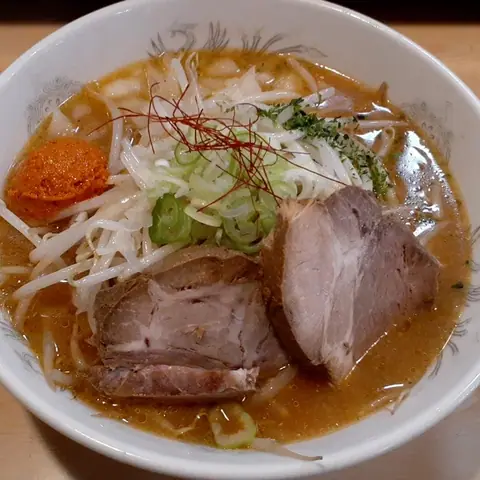
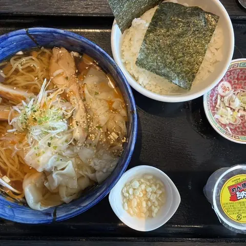
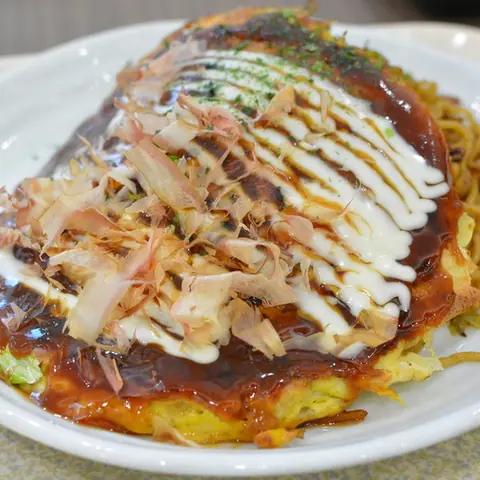
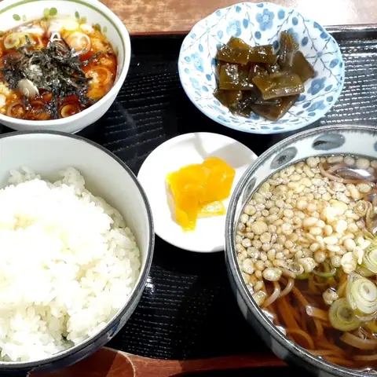

Mikawa
Mikawa · Yamagata
Mikawa
Highlighted on the Yamagata map.

Stay
なの花温泉 田田の宿

Nano Hana Onsen Denden No Yado
Onsen lodging in Mikawa, Yamagata.
Dining
ケンちゃんラーメン 三川店

Ken Chan Raamen Mikawa Mise
Ramen shop in Mikawa, Yamagata.
麺絆英

Men Kizuna Ei
Tsukemen shop in Mikawa, Yamagata.
幸栄堂製菓舗

Yukie Dou Seika Ho
Cake shop in Mikawa, Yamagata.
田田の宿

Denden No Yado
Inn restaurant in Mikawa, Yamagata.
はらだ

Harada
Japanese restaurant in Mikawa, Yamagata.
めん蔵 イオンモール三川店

Men Kura Ionmooru Mikawa Mise
Ramen shop in Mikawa, Yamagata.
ピーコック 三川店

Piikokku Mikawa Mise
Okonomiyaki restaurant in Mikawa, Yamagata.
道の駅 庄内みかわ

Michi No Eki Shounai Mikawa
Roadside-station eatery in Mikawa, Yamagata.
よこはま軒 三川店
Yokohama Ken Mikawa Mise
Ramen shop in Mikawa, Yamagata.
茂一そば
Moichi Soba
Soba restaurant in Mikawa, Yamagata.
ビストロ・デ・ポン
Bisutoro De Pon
French restaurant in Mikawa, Yamagata.
ラーメン翼
Raamen Tsubasa
Ramen shop in Mikawa, Yamagata.
大井餅や
Ooi Mochi Ya
Japanese sweets shop in Mikawa, Yamagata.
産直みかわ
Sanchoku Mikawa
Noodle shop in Mikawa, Yamagata.
すとうらーめん
Sutouraamen
Ramen shop in Mikawa, Yamagata.
ニューヨークニューヨーク
Nyuuyookunyuuyooku
Pasta restaurant in Mikawa, Yamagata.
柚子庵
Yuzu Iori
Izakaya in Mikawa, Yamagata.
豚串・焼肉 ぶーちゃん
Buta Kushi Yakiniku Buuchan
Skewer grill in Mikawa, Yamagata.
ジェントルスパゲティ
Jientorusupagetei
Pasta restaurant in Mikawa, Yamagata.
キッチンAIZU
Kitchin Aizu
Yoshoku (Western-style) restaurant in Mikawa, Yamagata.
山形県庄内総合支庁その他福利厚生施設等食堂
Yamagataken Shounai Sougou Shichou Sono Hoka Fukurikouseishisetsu Nado Shokudou
Ramen shop in Mikawa, Yamagata.
福仙
Fuku Sen
Sushi restaurant in Mikawa, Yamagata.
ココス 山形三川店
Kokosu Yamagata Mikawa Mise
Family restaurant in Mikawa, Yamagata.